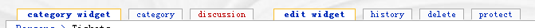
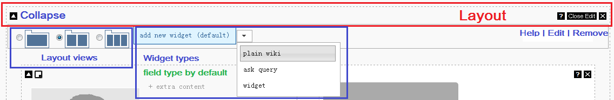
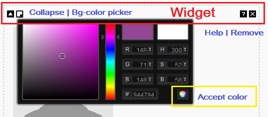
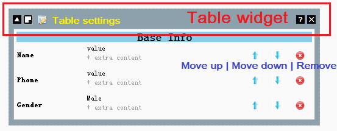
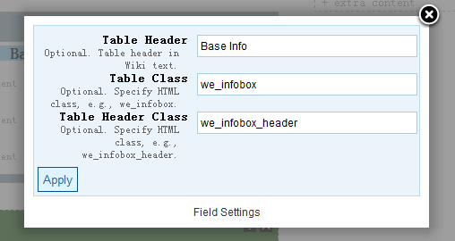
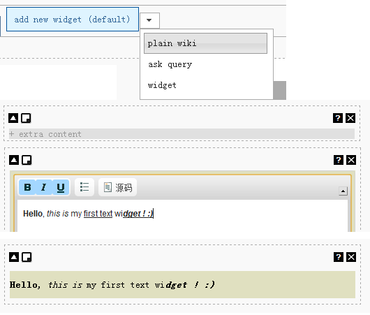
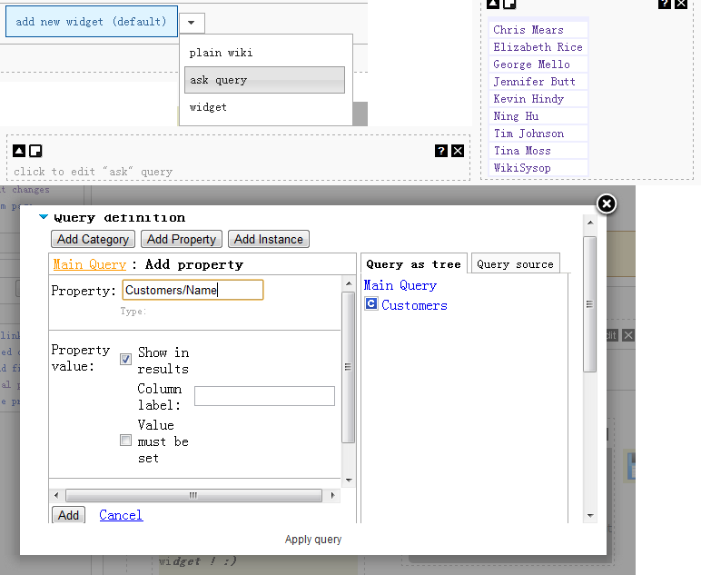
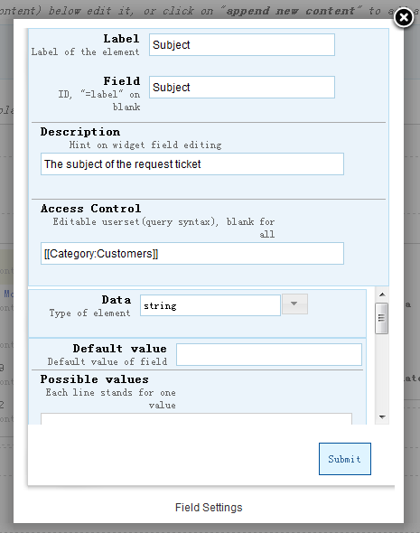
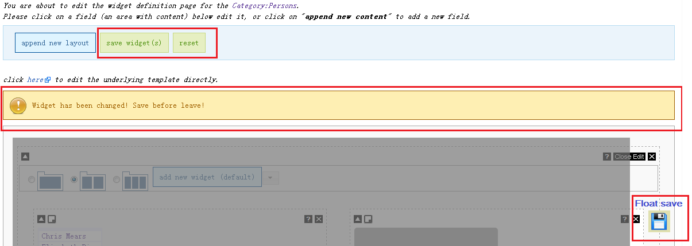

|
|
|
Category widget overview | Action connector | Access control | Field widget editing | Form editing | Video Workthrough | Demo: Build certain workflow |
OverviewCategory widget customize pages within certain categories, to define UI, generate editing form automatically, bind field with semantic data. Each category widget is bound with one category. Users can start widget 'designing' by click the 'edit widget' link on category widget page. 
Category widget uses template to save UI. LayoutLayout tool-set list below. WidgetWidgets are able to drag-and-drop inside layouts. The background color can be changed as well. Table WidgetTable widget is a special type of widget which is able to have a set of 'field widget' in. To change table header and style is required. For now, only built-in styles available. Widget typesWidget based on Widgets extension
A great MW extension called Widgets extension allows the creation of raw HTML pages that can be embedded (similarly to templates) in normal wiki pages.
* To fill in widget parameters with certain field value, please use 'field widget' with 'hidden field' view. Plain text widgetPlain text widget help users to put in standard wiki text, a simple WYSIWYG is applied. Users can add special parser functions / templates here. Query widgetSMWHalo is a great extension to help improve SMW work. Its 'QueryInterface' tool helps user build up #ask queries. * This type will appear when Widgets extension is deployed to site. Default field widgetField widget is the default widget type. Each widget is bound to a field / semantic property. SaveSave the UI and you've WYSIWYG category widget view.  |